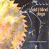

Celtic Lyrics Corner
>
Artists & Groups
>
Old Blind Dogs
> Close To The Bone

Close To The Bone
(1993)
Tracks
:
1.
Kilbogie
2. Linden Rise
3.
The Cruel Sister
4. The Honeymoon Reel/Kings/The Clayslaps Reel
5.
The Twa Corbies
6. The Universal Hall/The Nuptial Knot/The Barlinnie Highlander
7.
MacPherson's Rant/The Winging
8. Seonaidh Mor/The Fall/Dick Gossops
9. Margaret Cromar
10.
The Trooper And The Maid or The Trumpet Sounds At Burreldales
11. The Broken Pledge/Claggy's Dilemma/Hamilton's Jig
12.
Jean O' Bethelnie (Glenlogie)